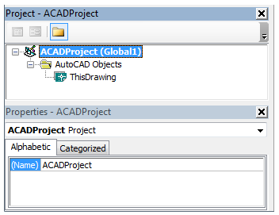

About Naming Your Project (VBA/ActiveX)
About Naming Your Project (VBA/ActiveX)
To Change the File Name for a Project (VBA/ActiveX)
Autodesk AutoCAD 2021: ActiveX Developer's Guide
>
Getting Started with VBA
>
About Editing Your Projects with the VBA IDE (VBA/ActiveX)
>
About Naming Your Project (VBA/ActiveX)
>
To Change the Name of a Project (VBA/ActiveX)
You can rename a project from the VBA IDE.
In the VBA IDE, Project Explorer window, select the project to change.

Right-click the project and click
<project_name>
Properties.
In the
<project_name>
- Project Properties dialog box, in the Project Name text box, edit the project's name. Click OK.
Related Tasks
To Change the File Name for a Project (VBA/ActiveX)
Related Concepts
About Naming Your Project (VBA/ActiveX)
Saving Your Project (VBA/ActiveX)